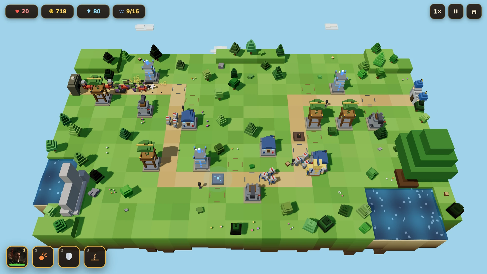
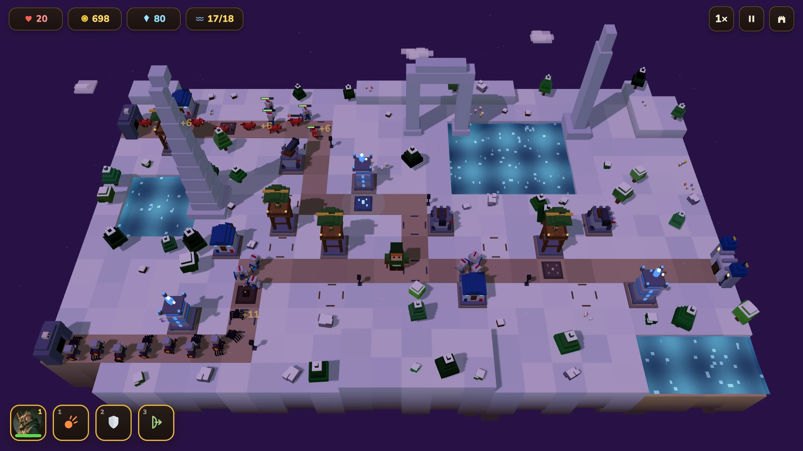
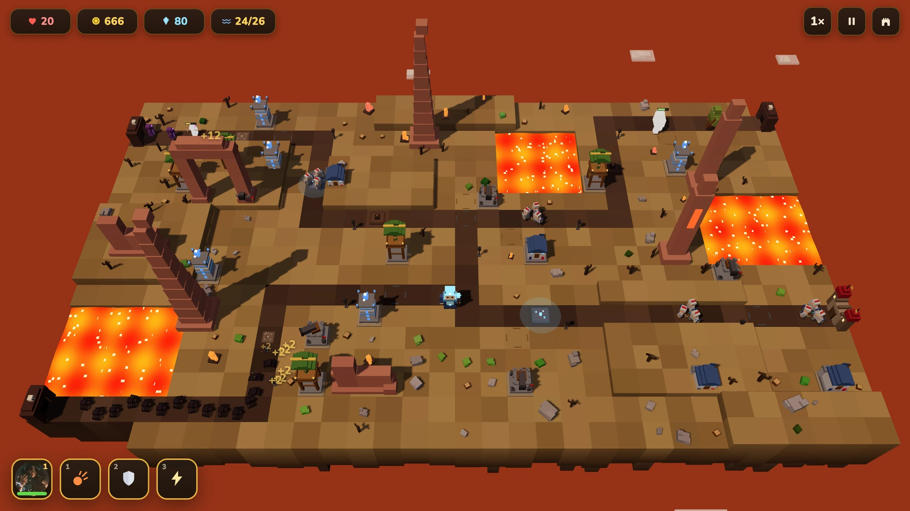
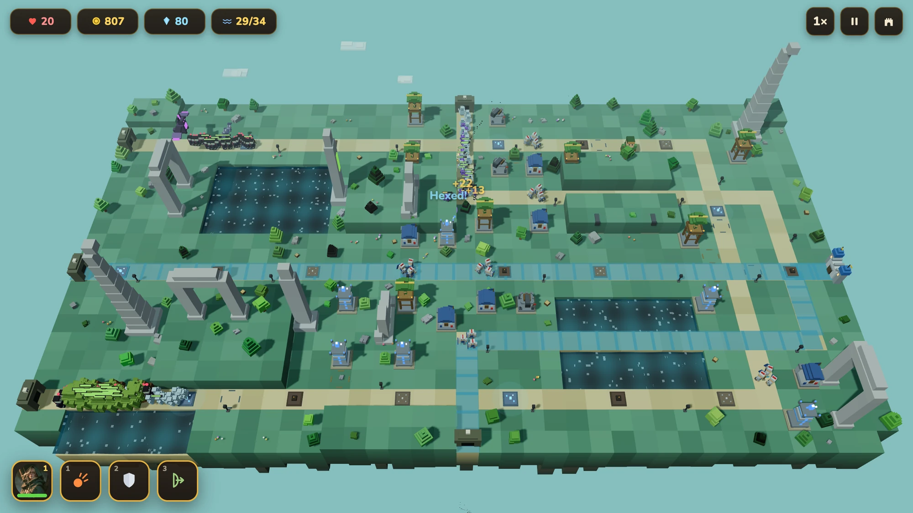

Constraint
A campaign with branching towers, multiple roads, heroes and endless mode must stay small enough to load while remaining deterministic and testable.
CASE / Voxel tower defense
Voxel tower defense. Ten maps, 249 authored waves, and three boards that each break a rule the other nine keep.

HOW IT HOLDS UP
The voxel modeler, fixed-step sim, ten maps, authored waves and balance.
A campaign with branching towers, multiple roads, heroes and endless mode must stay small enough to load while remaining deterministic and testable.
Generate 3D models from colored boxes, synthesize sound in WebAudio, draw icons as SVG, and keep a fixed 60Hz accumulator behind the render loop.
Live and installable: ten maps, 249 authored waves, three heroes, endless mode and 154 tests.
SELECTED PROOF
RECORDED STATES




KEEP READING